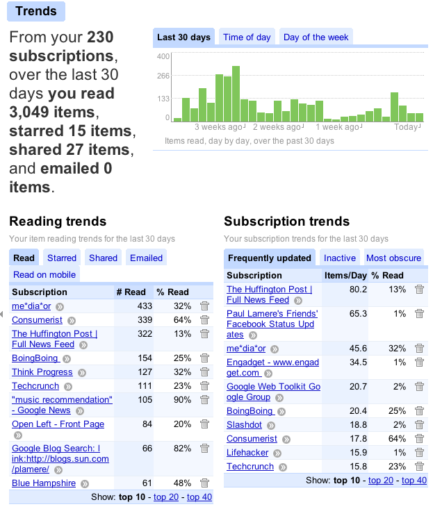

Looks like the house bill to save internet radio has passed the house ... now onto the Senate. Woot! More info at c|net and Pandora's blog.
Sunday Sep 28, 2008
Saturday Sep 27, 2008
From The Twitter
@Tom Conrad Help save @pandora_radio: call 202-225-3121 NOW, ask for your rep, & ask them to support H.R. 7084. Critical vote Saturday AM., so call now! Here's more on how you can help save @pandora_radio TONIGHT: http://tinyurl.com/4a8ph9
Some photos from the Pandora Radio photostream at Flickr:
One Llama has just launched a
beta of their online radio search portal. It is a pretty simple service
- type in the name of an artist you like and One Llama will point you
to online radio stations that have recently played music by that artist.
Here's an example - I searched for Emerson, Lake and Palmer and I was
given a list of 10 stations that have played ELP lately. I can click
on any of these stations and listen to the station immediately
(although, It may be a long time before the station plays ELP again).
One may ask why anyone would prefer using this type of search engine to find an internet station that plays music that you'd like - when one can just go to Last.fm or Pandora and create a radio station that is customized to your exact taste. I think that there is still some advantage to human-curated online radio - especially from stations like Radio Paradise where a real DJ is creating playlists. If you want to find a station with a real DJ that plays the kind of music that you'd like, One LLama Radio may be the place for you.
I must admit I am a bit disappointed with the current One Llama radio. I was expecting something similar to the work that Martin Gasser, Arthur Flexer and Gerhard Widmer have done using explorative visualizations based on content-analysis to help people find online radio. There's an ISMIR paper here: Streamcatcher: Integrated Visualization of Music Clips and Online Audio Streams. Perhaps the next incarnation of One Llama radio will be a bit more advanced.
I have 3 invites to One Llama Radio - if you'd like one just leave a comment and I'll send you one. (Via TechCrunch)
Friday Sep 26, 2008
If you are in the music tech business, stop what you are doing and read Justin's chronicle of his struggle with the labels while building Muxtape. An excerpt:
And so I made one of the hardest decisions I’ve ever faced: I walked
away from the licensing deals. They had become too complex for a site
founded on simplicity, too restrictive and hostile to continue to
innovate the way I wanted to. They’d already taken so much attention
away from development that I started to question my own motivations. I
didn’t get into this to build a big company as fast as I could no matter
what the cost, I got into this to make something simple and beautiful
for people who love music, and I plan to continue doing that.
Thursday Sep 25, 2008
Here's my ''trends'' report from the Google Reader. I'm read on average about 100 posts a day!

The 'time of day' plot is pretty interesting too.
Tuesday Sep 23, 2008
At the ISMIR recommendation panel, Brian Whitman mentioned an Echo Nest showcase app called the Echo Chamber that adds the Echo Nest recommendation technology to imeem.
This, to me, is a really big deal - imeem is one of the fastest
growing music streaming sites on the web despite the fact that it has no
discovery tools to help you find music. If you can add recommendation
to imeem, especially the top-notch recommendation that you'd expect from
the Echo Nest, then you could end up with a game changer - you could
essentially replace Pandora and its million man-hours invested in the
music genome project with a mash-up.
Using the Echo Nest Developers API we find these similar artists to ELP: Anderson Bruford Wakeman and Howe, Jethro Tull, Giles, Giles & Fripp, Emerson Lake and Powell, Gentle Giant, Premiata Forneria Marconi, King Crimson, Van der Graaf Generator, Rick Wakeman, Genesis, Camel, U.K. Asia, Renaissance and Yes.
I gave the Echo Chamber a try this morning. In some ways it is very similar to Pandora. There's the minimalist interface. You can create a radio station by adding an artist to the station, and away you go ... the Echo Chamber will give you an infinite playlist of music related to the seed artist. Unlike Pandora, the Echo Chamber doesn't try to explain the recommendations but it does allow you to skip as many songs as you want (something Pandora won't let you do). So how good is the playlist? I started off by creating a station for "Emerson, Lake and Palmer" (the progressive rock band of the early 70s) - the first track played was "Drum Solo" from the live album - perhaps not the most popular or representative of ELP. However, I continued on with some good results
- Still .. You turn me on - ELP
- Birthright - Anderson Bruford Wakeman Howe
- Cross-Eyed Mary - Jethro Tull
- I talk to the Wind - Giles, Giles & Fripp
- The Queen - Gentle Giant - heh - this was funny, the metadata was right, but the audio was 'We will rock you' by Queen.
- L'lsola Di Niente - Premiata Forneria Marconi - Italian Progressive rock - never heard this before - pretty neat stuff.
- Lunar Lament - Demons & Wizards - some power metal
- Octopus - Van Der Graaf Generator
- Pices - Rick Wakeman & Tony Fernandez
- Is My Living in Vain - Zie'l - A funny match - a gospel R&B troupe - the only guess I can make about why this song is on the list is that they have an album called 'Genesis' which may be matched with the band by that name which is often paired with ELP
- Camel Walk - Phish - Another mismatch - perhaps another metadata mixup while trying to find music by the band Camel
- YES - by Tim - another botched match - smooth pop rock - but the song title is obviously being confused with the prog rock band of the same name.
- Millennium Warfare - Hell Razah - Don't know why this rap track was in the mix
- Sweetheart - Jont - this singer-songwriter adds to the WTF
- All that I am Asia 4 - Asia 4 is being confused with ASIA
- Genesis - Sky church - another 'genesis' confusion - metal with cookie monster vocals
With its playlists that go awry with the slightest nudge, the Echo Chamber is no replacement for Pandora's box, still - I really like the Premiata Forneria Marconi recommendation (the Echo Nest recommender is the first recommender of the many dozens that I've tried that have given me this novel and relevant recommendation). Hopefully, the folks at the nest will be able to straighten out the metadata matching issues and give us good playlists, there certainly is lots of potential here. I'm looking forward to the next effort to spring from the nest.
Using the Echo Nest Developers API we find these similar artists to ELP: Anderson Bruford Wakeman and Howe, Jethro Tull, Giles, Giles & Fripp, Emerson Lake and Powell, Gentle Giant, Premiata Forneria Marconi, King Crimson, Van der Graaf Generator, Rick Wakeman, Genesis, Camel, U.K. Asia, Renaissance and Yes.
One of the big takeaways from ISMIR this year for many researchers is the release of the Echo Nest developer APIs.
This set of webservices solves a whole bunch of problems that
typically chew up a researcher's time. With the webservices you can get
all sorts of artist data such as links to MP3s for the artist(!), news,
blogs, similar artists, links to videos. The Echo Nest can also give
you two notions of an artist's popularity: 'familiarity' (how well the
artist is known in the world) and 'hotttness'. Some examples:
| Artist | Familiarity | Hotttness |
|---|---|---|
| Beatles | 1.000 | 0.464 |
| Monkees | 0.834 | 0.000 |
| Deerhoof | 0.695 | 0.716 |
| Vampire Weekend | 0.840 | 0.545 |
| Weezer | 0.801 | 0.329 |
| Mozart | 0.552 | 0.000 |
As you can see Deerhoof is 'hottt' while Mozart is nottt.
The APIs are very easy to use ... in just a few minutes, I was able to use the Echo Nest API to gather links to audio for the artists in our database. The API call is:
http://developer.echonest.com/api/get_audio
?api_key=NOT_MY_API_KEY&name=Deerhoof&rows=2
which yields results like:
<response version="2">
<status>
<code>0</code>
<message>Success</message>
</status>
<query>
<parameter name="api_key">NOT_MY_API_KEY</parameter>
<parameter name="name">Deerhoof</parameter>
<parameter name="action">index </parameter>
<parameter name="method">get_audio</parameter>
<parameter name="rows">2</parameter>
</query>
<artist>
<name>Deerhoof</name>
<id>ARC51DL1187B9A9FED</id>
<mbid>11eabe0c-2638-4808-92f9-1dbd9c453429</mbid>
</artist>
<results numFound="142" numShown="2" start="0">
<doc id="a17a0f36a0d46de8ff0e2e1d450e92dd" type="audio">
<artistId>ARC51DL1187B9A9FED</artistId>
<artist>Deerhoof</artist>
<release>Offend Maggie</release>
<title>Offend Maggie</title>
<url>http://boxstr.com/files/3627643_bugb2/Deerhoof%20-%20Offend%20Maggie.mp3</url>
<link>http://pirika01.blogspot.com/2008/09/nwz-playlist-11.html</link>
<date>Tue Sep 23 12:01:34 UTC 2008</date>
<length>122</length>
</doc>
<doc id="998e139bd98d233b5d33455d11cbd352" type="audio">
<artistId>ARC51DL1187B9A9FED</artistId>
<artist>Deerhoof</artist>
<release>Offend Maggie</release>
<title>Offend Maggie</title>
<url>http://mp3upload.ca/download/8373/offendmaggie.mp3</url>
<link>http://letmeplaythemusic.blogspot.com/2008/09/you-know-you-love-me_19.html</link>
<date>Sat Sep 20 08:00:53 UTC 2008</date>
<length>122</length>
</doc>
</results>
</response>
The Echo Nest developer's API is cool stuff. I can see it being at the center of the next generation of music tech startups.
Monday Sep 22, 2008
A couple of folks have sent this link my way in the last week: How the iTunes Genius really works.
Sunday Sep 21, 2008
Here's a Flickr slide show of photos that were taken at ISMIR
2008. To have your photos added to the slideshow, upload them to Flickr
and tag them with ISMIR2008.
In the World According to Rags,
Rags suggests that most of the innovation in the music industry is
coming from start-ups, naming a few that have new business models or
another new way to exploit the social graph. He goes on to ask the
question "What companies are innovating in music?"
I agree that much innovation is coming from startups and I can point out a few that Rags didn't mention: The Echo Nest, The Sixty One, Muxtape (currently offline), the Hype Machine (not to mention the venerable but still innovative sites like Last.fm and Pandora). But I suggest that if Rag's is looking for innovation that he should also look at the academic communities that are doing research around music. For instance, there is lots of interesting research being done in the music information retrieval community - and the yearly conference, called ISMIR, just concluded this week in Philadelphia. Companies that are interested in music discovery pay close attention to what is going on at ISMIR - companies like Microsoft, Google, Yahoo, HP, Nokia, Philips, Last.fm, Pandora, Gracenote, MusicIP and Sun. This year's ISMIR had some interesting technologies that will someday find their way into the next startups - improved content-based recommenders to help people find music in the long tail, novel interfaces for helping people explore large collections of music, new techniques for data mining the social graph for music recommendation, ways to use social tags to enhance our understanding of music, techniques for detecting cover songs, etc. I hope that Rag's will take a look at some of the papers (or even just the summaries I've posted over the last week in this blog) to get an idea of where real innovation in the music industry is going to come from.
Saturday Sep 20, 2008
During the late-breaking/demo session Frank and I demonstrated
the Music Explaura - a web application that gives explainable and
steerable recommendations. Despite what I said in my previous post,
we actually had a great location, right next to the main auditorium -
with lots of traffic. We spent the entire demo time giving non-stop
demos, from two separate laptops. We had a 2-page white paper handout
describing the system. We received lots of great feedback - people
really seemed to like the idea and were hoping to see us release our web
app so that they could play with it.
Here's a photo of our demo location - right next to the big room. Lots of space, lots of light, nice and visible. Youngmoo loaned us a pair of desktop speakers too, so you could hear the music.

Here's Frank giving a demo to Charlie Inskip - Charlie's smiling so that's a good thing - since Charlie knows a whole lot about music.

Here's our poster - click on it for the PDF
After every demo, Frank would ask for a hug.

At first, I was not excited abut our poster location assignment during
the ISMIR late-breaking/demo session. It seemed to be an out of the way
corner of the venue - but we did seem to get a steady stream of
visitors (mostly male) and nearly everyone would stay for 30 seconds to a
minute while reading the poster - you really can't ask for more than
that. You could see that for these folks, steerability was especially
important.
This year at ISMIR they had a special session where researchers
could show some of their late-breaking work as well as some
demonstrations of their technology. Frank and I were showing off the
Music Explaura - and we were both quite busy for the whole session, so I
could only glance over at some of the nearby demos, which included a
dancing robot and Anita's music visualizer. I did get a chance to see
Òscar Celma and Marcelo Nunes GeoMuzik which lets you visualize your
music collection by positioning the artists in your collection on a
world map. You could then generate interesting playlists by just
drawing a route on the map. It is a pretty neat idea and a great mash
up of technologies.
I really wish I could have seen all of the demos - thankfully, Elias wrote up some comments about it.
While in Philadelphia for the ISMIR conference, a group of us went out to dinner to a restaurant that Justin had discovered called the Continental Midtown.
It was a pretty funky place, with good food and a fun atmosphere. But
the restaurant also has a creepy side to it. Each of the restrooms has
a large mirror over the dual sinks. But the mirror is really a one-way
mirror -- anyone standing in the bathroom lobby can watch you wash your
hands, clean your teeth, pluck your nose hair or whatever you might do
in a restaurant bathroom sink. It is very strange.
Thursday Sep 18, 2008
Plenary Session 7: Melody and Rhythm
Melody Expectation Method Based on GTTM and TPS
Masatoshi Hamanaka, Keiji Hirata and Satoshi TojoA method that predicts the next notes is described for assisting musical novices to play improvisations. The system can predict the candidate next notes not only from the surface structure of the melody but also from the deeper structure of the melody acquired by the generative theory of tonal music (GTTM) and tonal pitch space (TPS) analysis. Experimental results showed that the method can evaluate the appropriateness of the melody sufficiently well.
Rhythm Complexity Measures: A Comparison of Mathematical Models of Human Perception and Performance
Eric Thul and Godfried Toussaint
32 measures of rhythm complexity are compared using thre widely different rhythm datasets

Plenary Session 8: Knowledge Representation, Tags, Metadata and Web Mining
Connecting the Dots: Music Metadata Generation, Schemas and Applications
Nik Corthaut, Sten Govaerts, Katrien Verbert and Erik DuvalThis authors present how they can compare the expressiveness and richness of a metadata schema for an application. They've constructed a decision table that you can assist you in choosing the best metadata schema for your application.
The Quest for Musical Genres: Do the Experts and the Wisdom of Crowds Agree?
Mohamed Sordo, Oscar Celma, Martin Blech and Enric GuausThis paper presents the results of three experiments that attempt to see how well expert taxonomies agree with taxonomies derived from social tags (aka folksonomy). Really interesting stuff. I just love the idea of tag gardening to get taxonomies.

Plenary Session 9: OMR and Music Alignment
(Time to get my demo ready, so I'll have to skip these next two talks).Automatic Mapping of Scanned Sheet Music to Audio Recordings
Christian Fremerey, Meinard Mueller, Frank Kurth and Michael Clausen
Gamera Versus Aruspix: Two Optical Music Recognition Approaches
Laurent Pugin, Jason Hockman, John Ashley Burgoyne and Ichiro Fujinaga
This blog copyright 2010 by plamere

{kind=link}
{kind=link}
{kind=link}